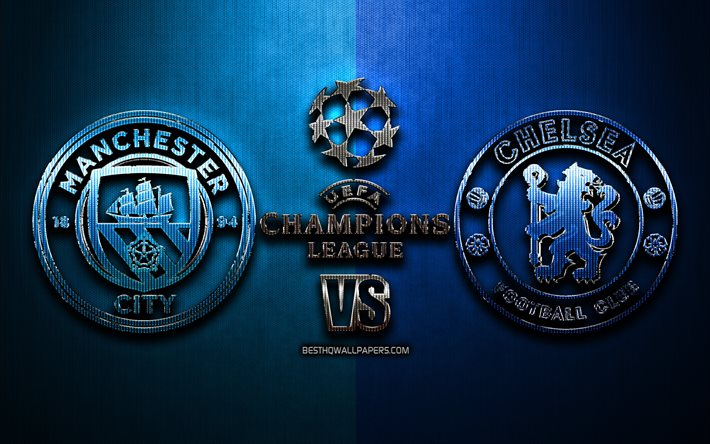
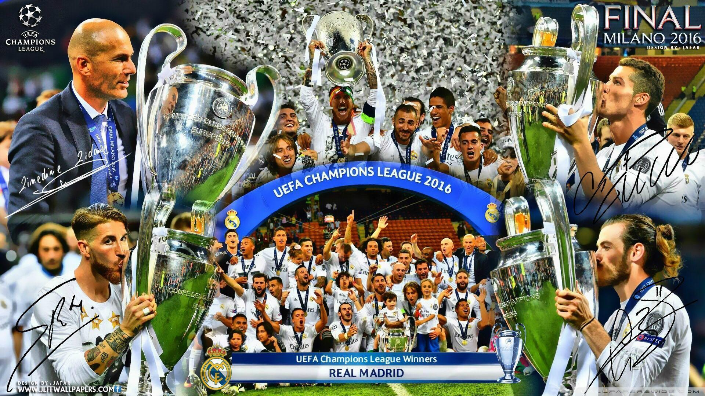
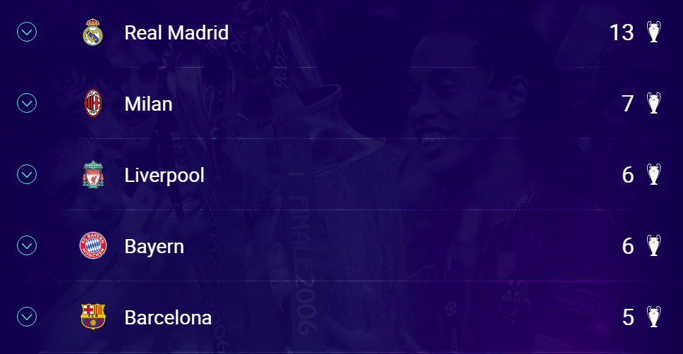

¿Qué es la Champions League?
La Champions League es el torneo con mayor nivel en Europa donde los mejores equipos de cada liga juegan una fase de grupo, luego unos octavos, cuartos, semis, y finalmente la gran final. Todos los duelos que salen en esas fases salen mediante sorteos que organiza la UEFA con algunos iconos del fútbol mundial para escoger las bolas con los nombres de los equipos. A este torneo se clasifican los 3/4 mejores de las grandes ligas, mientras que los 1/2 mejores de algunas ligas como la Holandesa o la Turca también se clasifican.
Champions League 2020/21
La Champions esta temporada tendrá la final el próximo sábado 29 de Mayo, jugandose un Chelsea VS Manchester City, que eliminaron en semifinales al Real Madrid y al PSG respectivamente. Esta final ya ha tenido lugar hace 2 semanas en la Premier League, donde el Chelsea salió vicotiroso por 1-2 en el Estadio Ciudad de Mánchester.
Crstiano Ronaldo
Cristiano Ronaldo ha demostrado ser el Rey de la Champions League, siendo el futbolista con más Champions League ganadas en toda la historia ganando 5, 4 con el Real Madrid y 1 con el Manchester United.
Además de esto, el Portugués es también el máximo goleador en la historia de la competición, con 134 goles a su espalda.
Clubes con más títulos
El Real Madrid es el club que más Champions League ha conseguido a lo largo de la historia, teniendo nada más y nada menos que 13 Champions en su palmarés.
Lo sigue el AC Milán con 7 Champions League ganadas.
El Bayern Münich y el Liverpool ocuparían el puesto número 3 y 4 empatados entre sí.
El FC Barcelona posee la 5ª posición con 5 trofeos de la Champions League.
